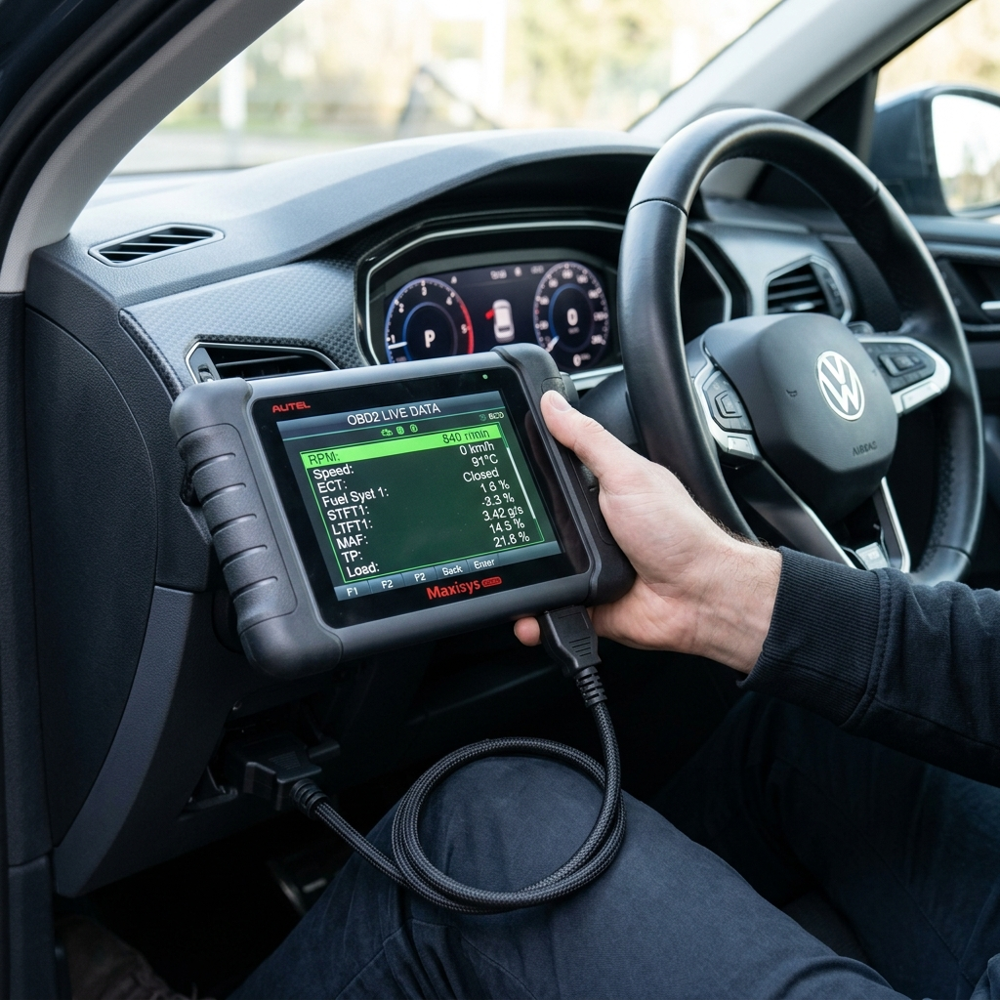
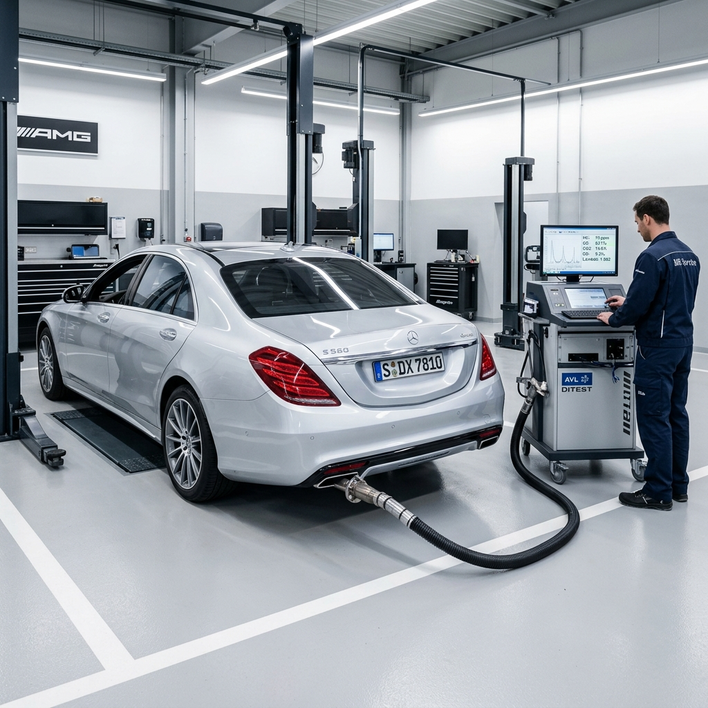
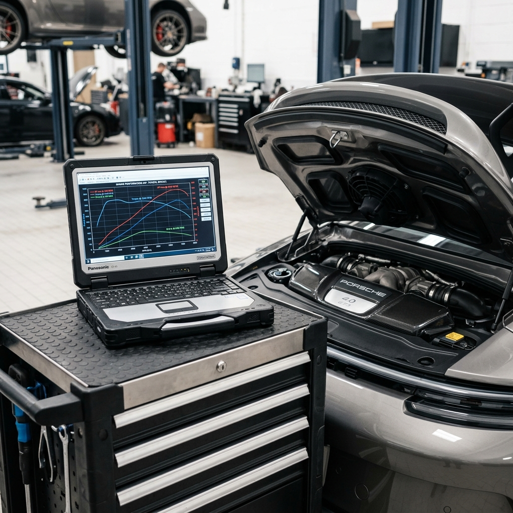
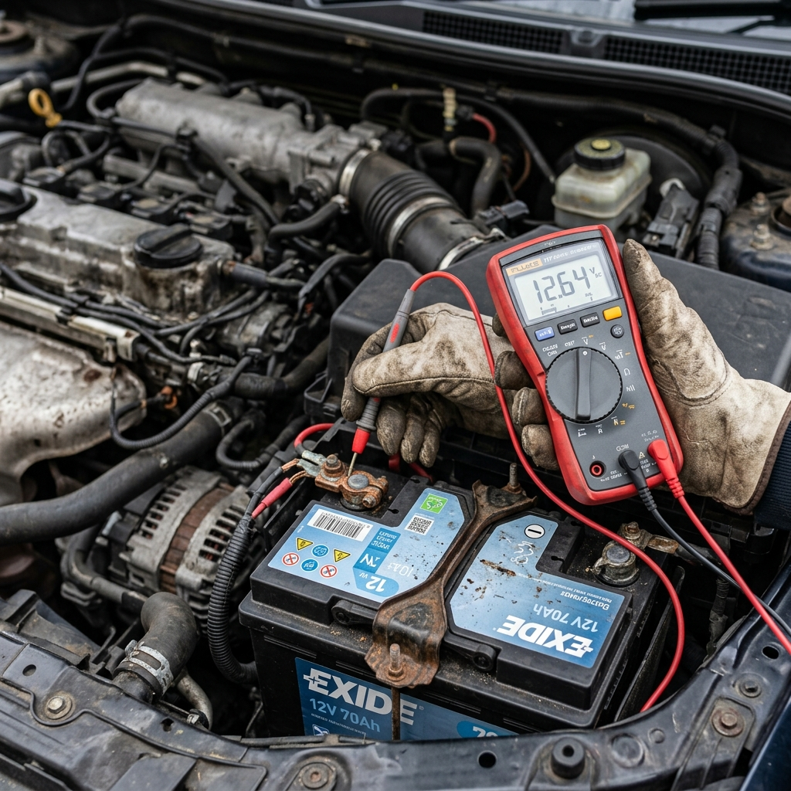

Comprehensive Diagnostic Solutions
From basic code reads to full system diagnostics — we cover it all.

OBD2 Diagnostics
Full port scanning with trouble code readout and real-time data streaming.
View Details
Pre-Purchase Inspection
Thorough vehicle inspection with full diagnostic scan before you buy.
View Details

Electrical Diagnostics
Battery, alternator, starter, and full wiring system testing and Diagnostics.
View DetailsOBD2 Code Lookup Library
Instantly search and understand any diagnostic trouble code. Our database covers thousands of OBD2 codes with plain-language explanations.
The engine control module has detected that cylinder 1 is misfiring. This can cause rough idle, loss of power, and increased emissions.
Everything in One Place
Manage all your vehicle diagnostics, schedule scans, review reports, and track mechanics from a single powerful dashboard.
Schedule Scans
Book OBD2 diagnostic scans with a few clicks.
Diagnostic Reports
Access detailed reports with code analysis.
Track Mechanic
Live tracking of your assigned mechanic's arrival.
Live Dispatch Tracking
Once your diagnostic is booked, see your certified technician en route on our live telemetry map.
Technician Telemetry & Status
Our fleet is fully instrumented. You can check vehicle telemetry and status live as the technician is driving to your home or office.
Certified & Guaranteed
Industry certifications and guarantees that give you confidence in every diagnostic.
ASE Certified
All mechanics hold active ASE certification.
Accuracy Guarantee
98% diagnostic accuracy backed by warranty.
No Hidden Fees
Transparent pricing with upfront estimates.
30-Min Response
Average mechanic arrival within 30 minutes.
Start Your Diagnostic Journey
Join thousands of drivers who trust our mobile diagnostic service for transparent and accurate vehicle health insights.
Create Free Account